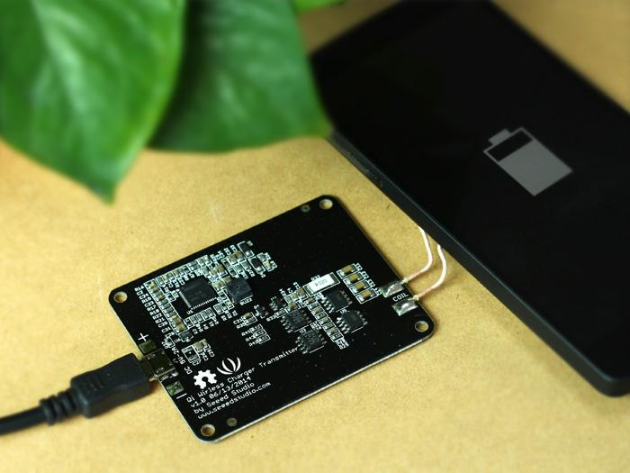

This module is designed for 5V Qi Wireless Charge Transmitter,which is base on BQ500211,BQ500211 is a second generation digital wireless power controller that integrates all functions required to control wireless power transfer to a single WPC compliant receiver.This module with FOD,it will automatically recognizes when charging module is close. Qi Wireless Charger Transmitter compation with most wireless charging mobile phone on market such Nexus 5.
we can used it to charge phone.

Your phone will enter the charging mode when D1 is flash and buzzer is sound